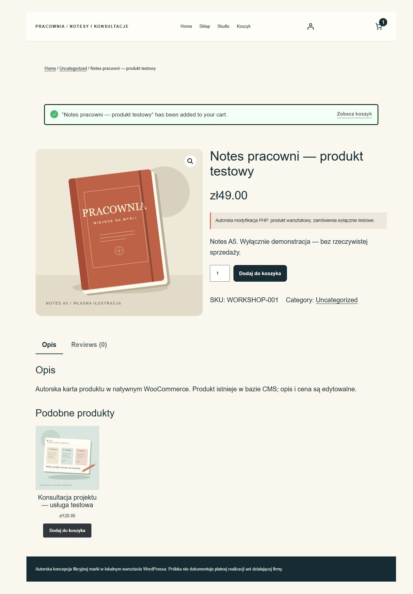

Pracownia / WooCommerce
Odizolowana kopia własnego rzeczywistego sklepu WordPress/WooCommerce, z produktem fizycznym i usługą wirtualną. Natywny checkout tworzy obiekty zamówień w bazie.
To rzeczywiście wykonana autorska demonstracja z własną bazą, konfiguracją i natywnym panelem. Nie jest płatnym zleceniem klienta. Ta strona jest statycznym portfolio: zrzuty i eksporty nie udają działającego backendu.
Co rzeczywiście działa
- WordPress 7.1.3, WooCommerce 11.2.1, PHP 8.5.11 i SQLite.
- Świeży test HTTP: produkt fizyczny → koszyk → checkout → natywne zamówienie BACS 61 PLN, w tym 12 PLN dostawy.
- Osobny test usługi wirtualnej: zamówienie 120 PLN bez dostawy. Oba mają stan on-hold i zostały odczytane przez API WooCommerce.
- Rzeczywisty przycisk Add to cart i aktualizacja koszyka sprawdzone także w przeglądarce przez root.
Pomiar Lighthouse 13.5.0
| Tryb | Wydajność | Dostępność | Dobre praktyki | SEO |
|---|---|---|---|---|
| mobile | 75 | 95 | 100 | 66 |
| desktop | 98 | 96 | 100 | 66 |
Rzeczywisty test lokalnego serwera, oficjalny Lighthouse i Chrome. To nie jest wynik produkcji klienta ani terenowy pomiar Google PSI. Demonstracje celowo mają noindex; ten warunek obniża ocenę SEO. Wynik nie gwarantuje 90+ na nieznanym hostingu.
Pełny raport mobile HTML · JSON mobile · Raport desktop · Dowód natywnego działania · Eksport rzeczywistego CMS
Rzeczywiste strony i panel

Granice demonstracji
- BACS jest testem ręcznego przelewu. Nie pobrano pieniędzy i nie wysłano e-maili. To nie jest dowód działania płatnej bramki ani webhooków.
- W tej próbce wyłączono zarządzanie stanem magazynowym; rezerwacja zapasu nie jest potwierdzona.
- Lokalny wynik wydajności sklepu jest niższy na mobile niż lekkich stron; pełne raporty są dostępne bez ukrywania tego wyniku.